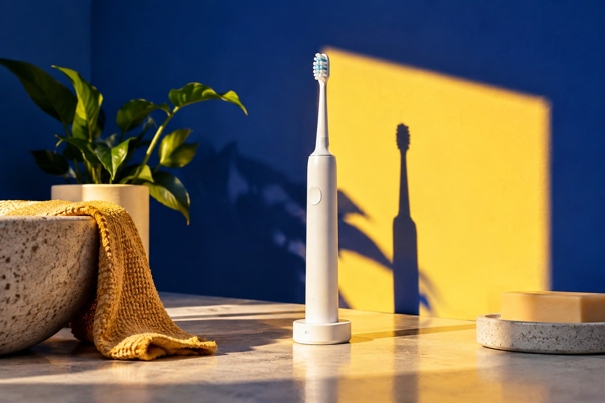
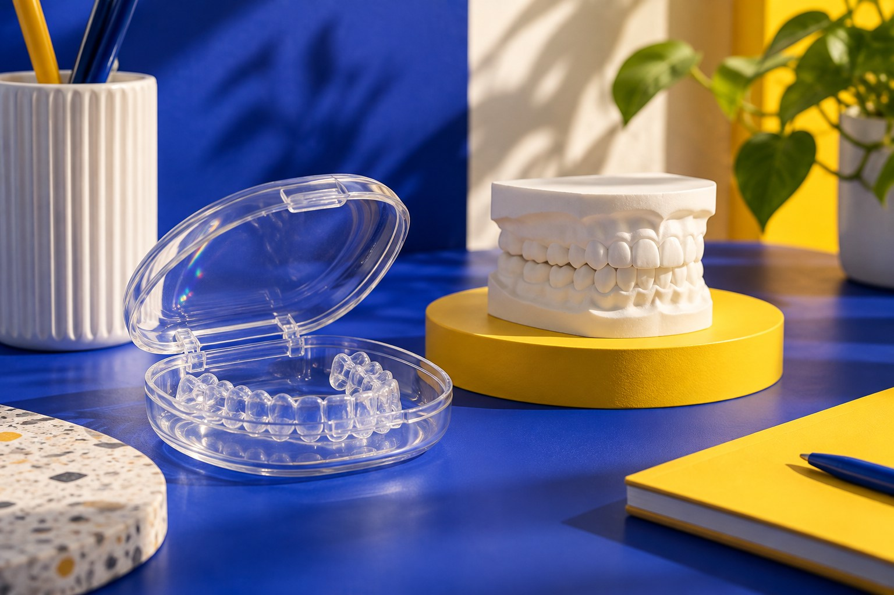

Encontre seu ponto de partida.
Abra cada área, conheça o assunto e siga para a página completa.
Seu cuidado.
Seu momento.
Três caminhos para conhecer. A indicação de cada cuidado depende de avaliação profissional.
01Prevenção e rotina
＋

Avaliação e acompanhamento da saúde bucal no dia a dia.
Conhecer prevenção e rotina02Ortodontia
＋

Alinhamento, mordida e planejamento a partir da avaliação.
Conhecer ortodontia03Cuidado na infância
＋
Adaptação, acompanhamento e conversa com a família.
Conhecer cuidado na infânciaO que acontece no primeiro encontro?
A proposta demonstrada começa com uma conversa sobre o que você procura, seguida da avaliação e da explicação dos próximos passos. O protocolo real deve ser confirmado com a clínica.
Continuar neste assuntoPreciso saber qual cuidado procurar?
Você pode começar descrevendo sua dúvida. A avaliação profissional ajuda a organizar as possibilidades; não é necessário escolher um tratamento pelo site.
Continuar neste assuntoComo confirmar valores e condições?
A equipe da clínica deverá informar valores, formas de pagamento e condições antes da contratação. Este catálogo não apresenta preços fictícios.
Continuar neste assunto